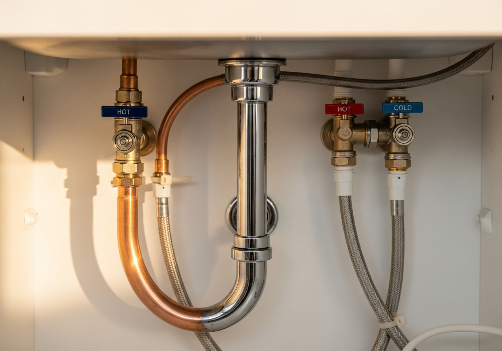

Restaurants, offices, retail, and multi-unit properties across Greater Austin. Fast diagnosis, code-compliant work, and pricing you approve before anything starts.

A backed-up line in a restaurant or an office restroom out of order costs more per hour than the repair. We diagnose fast, give you the price upfront, and do clean, code-compliant work that holds.
Rooter-Man of Austin is licensed (M40109), family-owned, bilingual, and has served Greater Austin businesses since 2012. Every job is warranty-backed, and financing is available on larger projects.
Our line is answered around the clock at (512) 645-1441. Tell us what is going on and we give you the next available options, often same-day.
A licensed plumber inspects the real problem and explains it plainly, English or Spanish. You see the price before any work begins. No surprises, no upsell pressure.
We do the work cleanly and to code, test it, and leave your space the way we found it. Every job is backed by our warranty.
"Josh was excellent. He was thorough and knowledgeable and knew exactly what he needed to do to fix the problem."
"Eddie did an amazing job installing four faucets. Thorough, friendly, and efficient from start to finish. He left everything clean and neat, and the results look fantastic."
"Joshua was very transparent about the whole process. He assured us the problem would be resolved."

New to Rooter-Man of Austin? Save 10% on your first service.
Cannot be combined with any other coupon. Restrictions may apply. Valid Jan 1 through Dec 31, 2026. Call to Claim (512) 645-1441Replacing or installing a water heater? Take $100 off with Rooter-Man.
Cannot be combined with any other coupon. Restrictions may apply. Valid Jan 1 through Dec 31, 2026. Call to Claim (512) 645-1441Yes. Grease-heavy kitchen drain lines are exactly where hydro jetting earns its keep, and scheduled jetting programs keep lines from backing up mid-service. We also handle commercial water heaters, fixtures, and sewer lines.
We schedule to minimize your downtime, and our phone line is answered 24/7 so you can book the moment something comes up. Tell us your constraints and we will plan the visit around them.
Yes. Rooter-Man of Austin holds Texas plumbing license M40109 and our work is code-compliant and warranty-backed. Documentation for property managers is no problem.
It depends on the job, but we believe in transparent, upfront pricing. For many services we can give you a ballpark estimate over the phone, and you always see the price before any work begins. No upsell pressure.
Yes. We offer full bilingual service in English and Spanish. When you call, just let us know which you prefer and we will review the problem, pricing, and warranty in that language.

Licensed M40109, family-owned since 2012, and trusted by Greater Austin businesses. Upfront pricing, warranty-backed work, and a line that is answered 24/7.